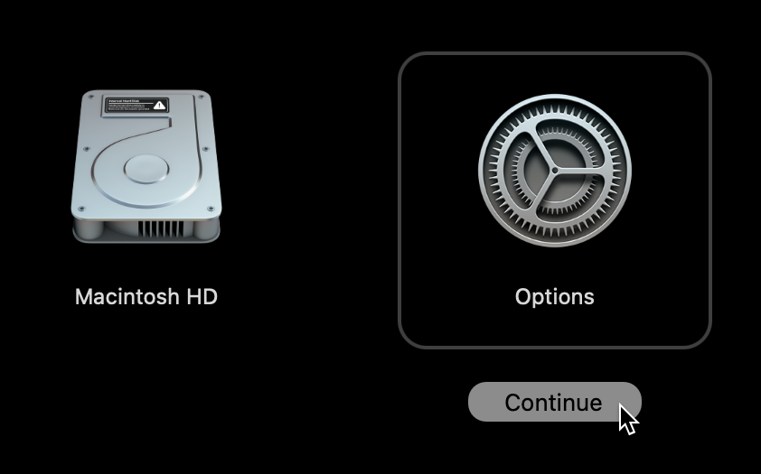
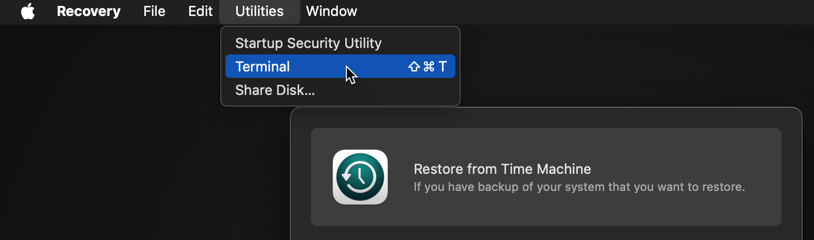

FAQ
Headless machines¶
Starting from macOS 15 (Sequoia), there's an undocumented requirement from Virtualization.Framework (which Tart uses) to have an unlocked login.keychain available at the times when running a VM.
Without an existing and unlocked login.keychain, the VM won't start with errors like:
SecKeyCreateRandomKey_ios failedFailed to generate keypairInteraction is not allowed with the Security Server
Below you'll find a couple of workarounds for this behavior.
Log in via GUI at least once¶
Connect to the headless machine via Screen Sharing and log in to a Mac user account. If you haven't done already, you can enable Screen Sharing via the terminal.
Logging in graphically will automatically create the login.keychain. Afterward, you have two options:
- configure automatic log in to a Mac user account
- this will maintain a running user session (GUI) even after the machine reboots
- moreover, you can still lock the screen (either manually or automatically), however, the security benefit of this is questionable
- use
security unlock-keychain login.keychainto unlock the login keychain via the terminal- this command also supports the
-pcommand-line argument, which allows you to supply a password and unlock non-interactively
- this command also supports the
Create and unlock the login keychain via the terminal¶
Compared to the previous approach, this one is fully automated, but might stop working at some point in the future:
security create-keychain -p '' login.keychain
security unlock-keychain -p '' login.keychain
security login-keychain -s login.keychain
Note that this will create a login.keychain with an empty password. Consider supplying a different value to -p or omitting the -p to enter the password interactively.
Troubleshooting crashes¶
If you experience a crash or encounter another error while using the tart executable, you can collect debug information to assist with troubleshooting. Run the following command in a separate terminal window to gather logs from the Tart process and the macOS Virtualization subsystem:
While the events are being streamed, attempt to reproduce the issue. Once the issue is reproduced, stop the streaming by pressing Ctrl+C. Then, attach the tart.log file to your report.
VM location on disk¶
Tart stores all its files in ~/.tart/ directory. Local images that you can run are stored in ~/.tart/vms/.
Remote images are pulled into ~/.tart/cache/OCIs/.
Nested virtualization support?¶
Tart is limited by functionality of Apple's Virtualization.Framework. At the moment Virtualization.Framework
supports nested virtualization only on M3 or M4 chips running macOS 15 (Sequoia). By default, it is disabled, but can be enabled by passing the --nested flag to tart run.
Connecting to a service running on host¶
To connect from within a virtual machine to a service running on the host machine
please first make sure that the service is bound to 0.0.0.0.
Then from within a virtual machine you can access the service using the router's IP address that you can get either from Preferences -> Network
or by running the following command in the Terminal:
Note: that accessing host is only possible with the default NAT network. If you are running your virtual machines with
Softnet (via tart run --net-softnet <VM NAME>), then the network isolation
is stricter and it's not possible to access the host.
Changing the default NAT subnet¶
To change the default network to 192.168.77.1:
sudo defaults write /Library/Preferences/SystemConfiguration/com.apple.vmnet.plist Shared_Net_Address -string 192.168.77.1
Note that even through a network would normally be specified as 192.168.77.0, the vmnet framework seems to treat this as a starting address too and refuses to pick up such network-like values.
The default subnet mask 255.255.255.0 should suffice for most use-cases, however, you can also change it to 255.255.0.0, for example:
sudo defaults write /Library/Preferences/SystemConfiguration/com.apple.vmnet.plist Shared_Net_Mask -string 255.255.0.0
Changing the default DHCP lease time¶
By default, the built-in macOS DHCP server allocates IP-addresses to the VMs for the duration of 86,400 seconds (one day), which may easily cause DHCP exhaustion if you run more than ~253 VMs per day, or in other words, more than one VM every ~6 minutes.
This issue is worked around automatically when using Softnet, however, if you don't use or can't use it, the following command will reduce the lease time from the default 86,400 seconds (one day) to 600 seconds (10 minutes):
sudo defaults write /Library/Preferences/SystemConfiguration/com.apple.InternetSharing.default.plist bootpd -dict DHCPLeaseTimeSecs -int 600
This tweak persists across reboots, so normally you'll only need to do it once per new host.
If that doesn't help after starting a new VM, it's possible that the /var/db/dhcpd_leases file is already overfilled with 86,400-second leases. You can remove it with the following command and try starting a new VM again:
And no worries, this file will be re-created on the next tart run.
Unsupported DHCP client identifiers¶
Due to the limitations of the macOS built-in DHCP server, tart ip is unable to correctly report the IP addresses for VMs using DHCP client identifiers that are not based on VMs link-layer addresses (MAC addresses).
By default, when no --resolver=arp is specified, tart ip reads the /var/db/dhcpd_leases file and tries to find the freshest entry that matches the VM's MAC address (based on the hw_address field).
However, things starts to break when the VM uses a DUID-EN identifier, for example. One of the notorious examples of this being Ubuntu, using this type of identifier by default on latest versions. This results in the /var/db/dhcpd_leases entry for Ubuntu appearing as follows:
{
name=ubuntu
ip_address=192.168.64.3
hw_address=ff,f1:f5:dd:7f:0:2:0:0:ab:11:cb:fb:30:b0:97:b6:3a:67
identifier=ff,f1:f5:dd:7f:0:2:0:0:ab:11:cb:fb:30:b0:97:b6:3a:67
lease=0x678e2ce7
}
Because the macOS built-in DHCP server overwrites the hw_address with the identifier, it leaves no information about the VM's MAC address to the tart ip.
To avoid this issue, make sure that your VM only sends a DHCP client identifier (option 61) with link-layer address (MAC address) or that it doesn't send this option at all.
For the aforementioned Ubuntu, the solution is outlined in the section How to integrate with Windows DHCP Server of Canonical Netplan's documentation:
Resolving the VM's IP when using bridged networking¶
When running tart run with --net-bridged, you need to invoke tart ip differently, because the macOS built-in DHCP server won't have any information about the VM's IP-address:
This causes the tart ip to consult the host's ARP table instead of the /var/db/dhcpd_leases file.
Note that this method of resolving the IP heavily relies on the level of VM's activity on the network, namely, exchanging ARP requests between the guest and the host.
This is normally not an issue for macOS VMs, but on Linux VMs you might need to install Samba, which includes a NetBIOS name server and exhibits the same behavior as macOS, resulting in the population of the ARP table of the host OS:
Running login/clone/pull/push commands over SSH¶
When invoking the Tart in an SSH session, you might get error like this:
Keychain returned unsuccessful status -25308
...or this:
Keychain failed to update item: User interaction is not allowed.
This is because Tart uses Keychain to store and retrieve OCI registry credentials by default, but Keychain is only automatically/semi-automatically unlocked in GUI sessions.
To unlock the Keychain in an SSH session, run the following command, which will ask for your user's password:
This command also supports the -p command-line argument that allows you to supply a password and unlock non-interactively, which is great for scripts.
Alternatively, you can pass the credentials via the environment variables, see Registry Authorization for more details on how to do that.
How is Tart different from Anka?¶
Under the hood Tart is using the same technology as Anka 3.0 so there should be no real difference in performance or features supported. If there is some feature missing please don't hesitate to create a feature request.
Instead of Anka Registry, Tart can work with any OCI-compatible container registry. This provides a much more consistent and scalable experience for distributing virtual machines.
Tart does have an analogue of Anka Controller for managing VMs across a cluster of Mac hosts called Orchard.
Automatic pruning¶
tart pull and tart clone commands check the remaining space available on the volume associated with TART_HOME directory (defaults to ~/.tart) before pulling or cloning anything.
In case there's not enough space to fit the newly pulled or cloned VM image, Tart will remove the least recently accessed VMs from OCI cache and .ipsw files from IPSW cache until enough free space is available.
The tart clone command limits this automatic pruning to 100 GB by default to avoid removing too many cached items. You can change this limit with the --prune-limit option (in gigabytes).
To disable this functionality, set the TART_NO_AUTO_PRUNE environment variable either globally:
...or per tart pull and tart clone invocation as follows:
Disk resizing¶
Disk resizing works on most cloud-ready Linux distributions out-of-the box (e.g. Ubuntu Cloud Images have the cloud-initramfs-growroot package installed that runs on boot) and on the rest of the distributions by running the growpart or resize2fs commands.
For macOS, however, things are a bit more complicated, and you generally have two options: automated and manual resizing.
For the automated option, you can use Packer with the Packer builder for Tart VMs. The latter has two has configuration directives related to the disk resizing behavior:
disk_size_gb— controls the target disk size in gigabytesrecovery_partition— controls what to do with the recovery partition when resizing the disk- you can either keep, delete or relocate it to the end of the disk
For the manual approach, you have to remove the recovery partition first, repair the disk and the resize the APFS container.
To do this, first we'll need to identify the primary disk and the APFS containers by running the command below from within a VM:
For example, the output might look like this:
/dev/disk0 (internal, physical):
#: TYPE NAME SIZE IDENTIFIER
0: GUID_partition_scheme *100.0 GB disk0
1: Apple_APFS_ISC Container disk1 524.3 MB disk0s1
2: Apple_APFS Container disk3 44.1 GB disk0s2
3: Apple_APFS_Recovery Container disk2 5.4 GB disk0s3
(free space) 50.0 GB -
In the output, you'll normally see:
- a single physical disk (
disk0) - APFS container with the system partition which we're going to resize (
disk0s2) - APFS container with the recovery partition which we're going to delete (
disk0s3) (free space)which we'll put to use
To proceed, boot the VM in recovery mode using tart run --recovery and choose the "Options" item:

When the recovery OS boots, open the Terminal app:

In Terminal app, invoke the command below to remove the recovery partition:
Now, repair the disk:
Finally, resize the system APFS container to take all the remaining space:
Now, you can shut down and tart run as you'd normally do.